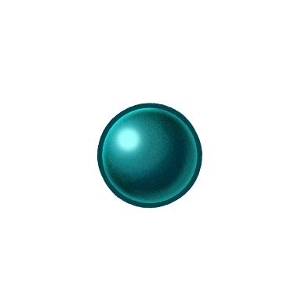

Chaque péché capitaux possède un une arme redoutable qui lui est unique s'appelant Trésor sacré.


Lostvayne
Lostvayne semble avoir une multitude d'effets, changeant l'une des attaques de Meliodas en plusieurs attaques. Elle lui permet aussi de pouvoir se multiplier, étant capable de produire simultanément jusqu'à quatre copies de Meliodas. Cependant, cela modifie la puissance totale de Meliodas par le nombre de copies créées.
Courechouse
Courechouse prend la forme d'une nunchaku. Confiée par le Roi de Liones, Courechouse appartenait à Ban il y a dix ans il se fit voler son trésor sacré.
Chastiefol
Elle est capable de se régénérer même après avoir été coupée en deux. Elle possède différentes formes:
- Oreiller: Quand il n'est pas en combat, Chastiefol reste sous la forme d'un oreiller. L'oreiller peut également agir comme un bouclier.
- Lance: King utilise fréquemment cette forme, qui est une longue et large lance.
- Bumblebee: Une technique utilisée en conjonction avec la forme Lance.
- Forme 2, Gardien: Lorsqu'il est menacé, Chastiefol prend la forme d'un grand ours en peluche qui sous cette forme être contrôlé par King.
- Forme 3, Formalisation: Cette forme de Chastiefol est une lance avec une lame en forme de pinces de crabe.
- Forme 4, Fleur de Soleil: Un tournesol gigantesque émerge de la terre, qui domine les ennemis, et tire plusieurs projectiles qui sont capables de grandes destructions.
- Forme 5, Augmentation: ne armée de petits kunai apparaît, leurs trajectoires individuelles sont contrôlées par King à volonté par un simple signe de ses mains.
- Forme 7, Luminosité :King transforme sa lance en une sphère lumineuse entourée d'un anneau lumineux, qui peut éclairer les endroits les plus sombres.
- Forme 8, Jardin de Pollen: Une grande barrière est formée autour d'une personne et est capable de résister face aux attaques, même les plus puissantes. La barrière est faite de pollen de l'arbre sacré qui apaise la douleur immédiatement et cicatrise lentement les blessures de la personne.
Gideon
Gideon, comme les autres trésors sacrés, extrait tout le potentiel des pouvoirs de Diane. Avec lui, la capacité de Diane à manipuler la terre est encore plus puissante. De plus ce Gideon permet a Diane de rediriger toutes les attaque magique en direction du sol.
Aldan
Aldan prend la forme d'un petit orbe de cristal qui apparaît dans la main de Merlin. Elle flotte autour de sa paume. Une grande partie des capacités de Aldan nous sont inconnus, mais jusqu'à présent, il a été vu être utilisé en conjonction avec la télékinésie de Merlin et peut afficher un lieu à chaque fois que Merlin souhaite l'étudier.
Herritt
Herritt permet à Gowther d'utiliser Intrusion à sa pleine capacité en étendant grandement la gamme de son pouvoir. Il est capable avec d'arreter la conscience de n'importe qui ayant un niveau inférieur ou égal à 400 dans un rayon de 4.8km autour de lui.
Rhitta
Rhitta est une hache trés que seul Escanor peut soulever. La faculté principale de Rhitta est de capter la lumière, et donc, Escanor peut l'alimenter avec la puissance de son Ensoleillement afin qu'elle relâche cette énergie en de puissants coups. Rhitta est capable de répondre à l'appel d'Escanor en se déplaçant à une vitesse incroyable pour arriver dans sa main.